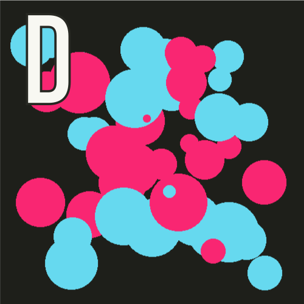

Clicky Clicky
Jed Rembold
September 24, 2021
Announcements
- Problem Set 3 due on Monday!
- I will be posting the Project 1 guide sometime tomorrow, so if you are a little ahead of the game you can get going on it sooner.
- At the latest, you should plan to start work on Project 1 Tuesday next week
- Projects take time, and setting aside some time each day to work on another piece is the best way to ensure you don’t reach the end of the week in panic mode
- Lab today!
- Polling: rembold-class.ddns.net
Review Question
Which of the below images is the mostly likely output of the code to the right?



def make_circle(x,y,r):
c = GOval(x-r, y-r, 2*r, 2*r)
c.set_filled(True)
if randint(1, 100) > 75:
c.set_color("#F92672") #pink
else:
c.set_color("#66D9EF") #blue
return c
gw = GWindow(500, 500)
for i in range(50):
gw.add(make_circle(
randint(50,450),
randint(50,450),
randint(5,50)
))New Methods
- A new method that acts on a
GWindow:
get_element_at(x,y) |
Returns the frontmost object at (x,y) or None |
- And more new methods that act on any
GObject
set_location(x,y) |
Resets the location of the object to the specified point |
move(dx,dy) |
Moves the object dx and dy pixels from its current position |
move_polar(dr,theta) |
Moves the object dr pixel units in direction theta |
contains(x,y) |
Returns True if the object contains the specified point |
get_color() |
Returns the color currently assigned to the object |
The Python Event Model
- Graphical applications usually make it possible for the user to control the action of a program by using an input device such a mouse.
- Programs supporting this type of control are called interactive programs.
- User actions such as clicking the mouse are called events.
- Programs that respond to events are said to be event driven.
- User input does not generally occur at predictable times. As the events are not controlled by the program, they are said to be asynchronous.
- In Python, you write a function that acts as a listener for a particular event type. When the event happens, the listener is called.
First Class Functions
- Functions in Python are treated as data values just like anything else!
- We will need to take advantage of this to write listener functions.
- You can assign a function to a variable, pass it as a parameter, return it as a result, etc
- Functions treated like any other data value are called first-class functions
- To work with a function itself, you leave off the
(). Including the parentheses is how you call the function!
A First Class Example
import math
def evaluate_numbers(func):
print(func)
print(func(0))
print(func(2))
print(func(10))
A = evaluate_numbers
A(math.sqrt)
A(math.exp)Closures
Consider the code to the right.
- Why does the line 12 not error?
- Python Tutor
f2must also keep track of any local variables!- The local variables that are included as part of a function are called its closure
b = 1
def f1(a):
print(a)
print(b)
def f2():
c = a + b
return c * 3
return f2
f2 = f1(10)
c = f2()Our First Interactive Example
- Consider the simple program below, where we’ve imported the basics and some of our helper functions
def draw_dots():
def click_action(event):
c = create_filled_rect(
event.get_x(), event.get_y(),
10,10, random_color())
gw.add(c)
gw = GWindow(500, 500)
gw.add_event_listener("click", click_action)- The
click_actionfunction specifies what to do when the mouse is clicked- Note that it has access to the
gwvariable since it is in the enclosing function and thus in the closure.
- Note that it has access to the
Registering a Listener
The last line of our example function:
gw.add_event_listener("click", click_action)tells the graphics window (
gw) to call theclick_actionfunction whenever a mouse “click” occurs within the window.When the user clicks the mouse, the graphics window, in essense, calls the client back to let them know that a click has occured. Thus, functions such as
click_actionare known as callback functions.The parameter
eventgiven to the callback function is a special data structure called a mouse event, which contains details about the specifics of the event that triggered the action.
Mouse Events
- We have a fairly comprehensive list of mouse-events that we can trigger callbacks on:
| Name | Description |
|---|---|
"click" |
The user clicks the mouse in the window |
"dblclk" |
The user double-clicks the mouse in the window |
"mousedown" |
The user presses the mouse button down |
"mouseup" |
The user releases the mouse button |
"mousemove" |
The user moves the mouse |
"drag" |
The user moves the mouse with the button down |
Event Details
- Certain actions can trigger more than one event
- Clicking generates a “mousedown”, “mouseup”, and then “click” event, in that order
- Events trigger no action unless the window is listening for that event
- If I drag my mouse in the
draw_dots()function, you’ll notice that nothing happens
- If I drag my mouse in the
- You can setup however many listeners you feel you need in order to make your program behave as desired
gw.add_event_listener("click", click_action)
gw.add_event_listener("dblclk", dblclk_action)Line Drawing
- Say we wanted to write a simple program that allows the user to draw lines by clicking and dragging the mouse
- Using two event listeners would be useful:
- “mousedown” could start drawing a zero-length line at the current mouse position (and add it to the window)
- “drag” could update the end-point of that line
- The strategy would allow the user to have visual feedback as they drag around, helping them to position the line
- Since the line stretches and contracts as you move the cursor around, the technique is commonly called rubber-banding
Attempt #1
from pgl import GWindow, GLine
WIDTH = 500
HEIGHT = 500
def draw_lines():
def mousedown_event(e):
x = e.get_x()
y = e.get_y()
line = GLine(x,y,x,y)
gw.add(line)
def drag_action(e):
line.set_end_point(e.get_x(), e.get_y())
gw = GWindow(WIDTH, HEIGHT)
line = None
gw.add_event_listener("mousedown", mousedown_event)
gw.add_event_listener("drag", drag_action)
if __name__ == '__main__':
draw_lines()What Happened?
- Remember that if you define a variable in a function, that variable is assumed to be local!
- Keeps you from accidentally overwriting variables you may not have meant to
- It works against us here, since we WANT to override the original value
- We can’t pass in the info as a parameter, since it is not part of the event information
- Python does have a
nonlocalkeyword, which allows you to state that a specific variable is not local, but it tends to just confuse students - In this class, we’ll store all variables that need to be shared between two or more functions in a state object
- Just a collection of values stored as a single object
- The object is defined in the main function, and then we can access and insert or recall values from it
Using GState
- The PGL library has a
GStateobject type that we can import to use for sharing data between callback functions - Create a variable, conventionally called
gsimmediately after creating the window:
gw = GWindow(WIDTH, HEIGHT)
gs = GState()- Value to be shared can be stored as part of the
gsvariable as an object attribute, which we will talk much more about in Ch 9- For now, shared variables should include
gsand then a period before the variable name. - So
linewill becomegs.lineeverywhere in our example
- For now, shared variables should include
Fixed Line-Drawing
from pgl import GWindow, GLine, GState
WIDTH = 500
HEIGHT = 500
def draw_lines():
def mousedown_event(e):
x = e.get_x()
y = e.get_y()
gs.line = GLine(x,y,x,y)
gw.add(gs.line)
def drag_action(e):
gs.line.set_end_point(e.get_x(), e.get_y())
gw = GWindow(WIDTH, HEIGHT)
gs = GState()
gs.line = None
gw.add_event_listener("mousedown", mousedown_event)
gw.add_event_listener("drag", drag_action)
if __name__ == '__main__':
draw_lines()